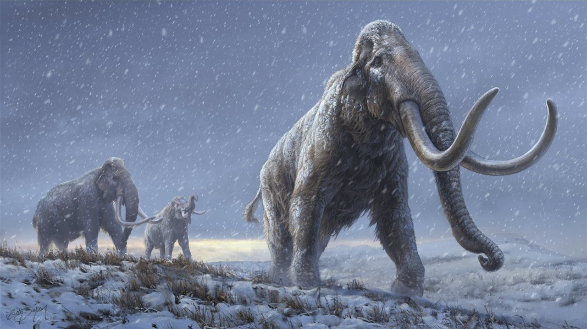

MAMMUTHUS
conocidos como mamuts,se han descrito numerosas especies siendo la mas conocida el mamut lanudo,su nombre viene de la lengua mansi "mangont" que significa "cuerno de tierra", con un peso de 6 a 8 toneladas"12 en los machos mas grandes",las especies del norte tenian pelo lanudo para protegerse de frios glaciares de su ecosistema,se alimentaba de hojas y corteza de arbol y cualquier vegetal,un mamut adulto comia 180 kg de comida al dia,a los 60 o 70 años de vidacuando los molares que tenia se gastaban y el animal moria debido a no poder alimentarse.
GRUPO=mamifero,placentario,paquidermo
DATACION=plioceno,pleisticeno,holoceno
TAMAÑO=9,1 m de largo
LOCALIZACION=norteamerica,europa,asia y africa

su periodo de gestacion era de 22 meses y daba luz a una sola cria,colmillos de 5cm les salian a los mamuts de 6 meses de nacido pero estos eran de leche y eran sustituidos por colmillos permanentes un año despues,ya de adultos estos podian medir 2,50m y pesar 50 kilos cada uno,estos no dejaban de crecer hasta la muerte del animal.gracias a las pituras rupestres se sabe que tienen una curvatura en la espada,una joroba de grasa,musculo o pelo.Vivian en manadas compuestas de hembras encabezadas por una matriarca,y los machos que vivian en pequeños grupos o solos ya que abandonaban la manada donde se habian criado al llegar a la madorez sexual,estos machos buscaban hembras de otros grupos para aparearse. Esto sucedia en la epoca corta del año,permitiendo que las crias naciecen en la epoca del año donde el alimento mas abunda
VOLVER